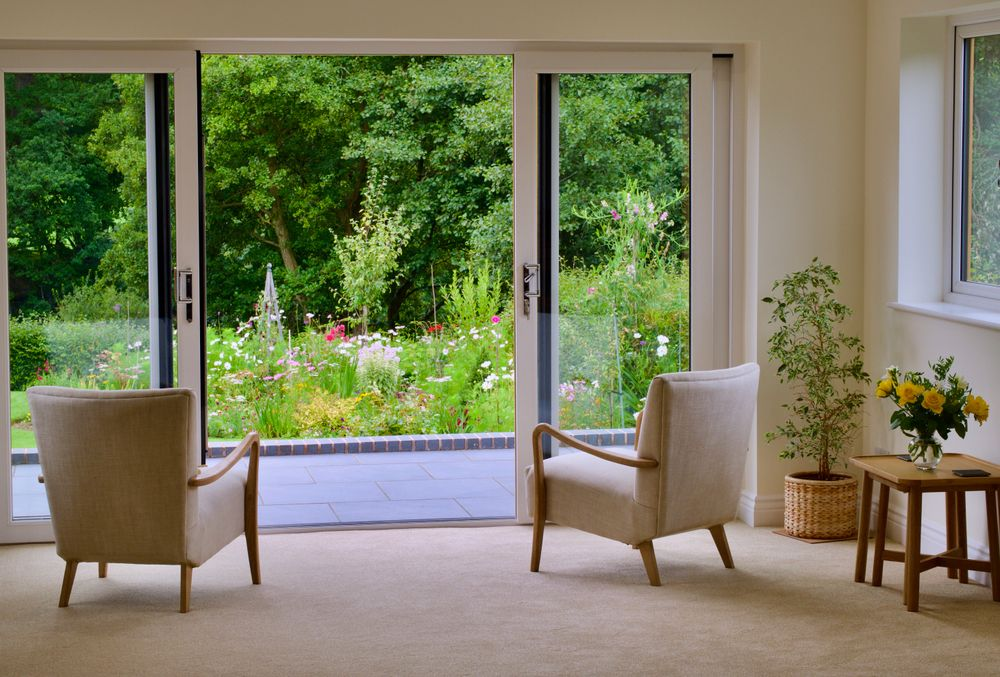

Case 01 · Sliding door replaced · 2 months ago
A slider out, a glazed French pair in — same opening, same day.
▪As found

An old two-panel sliding door in the wall between the house and the garden. The customer wanted it gone.
▪As left

Slider removed, a French door fitted in its place, and lights put up while we were there. Done the same day.
100% recommended. Trustworthy, reasonable price and very responsible. So happy with the work that he done in my house. Removed my old sliding door and replaced with French door and put some lights up. Sonia Agosto · 5 reviews · 9 photos